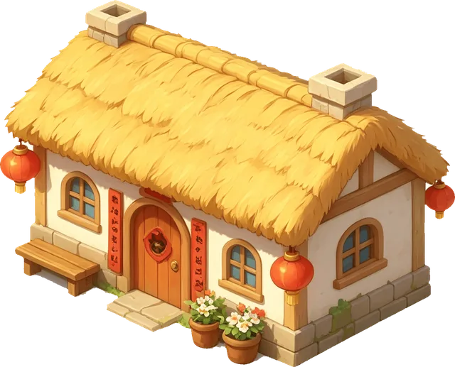
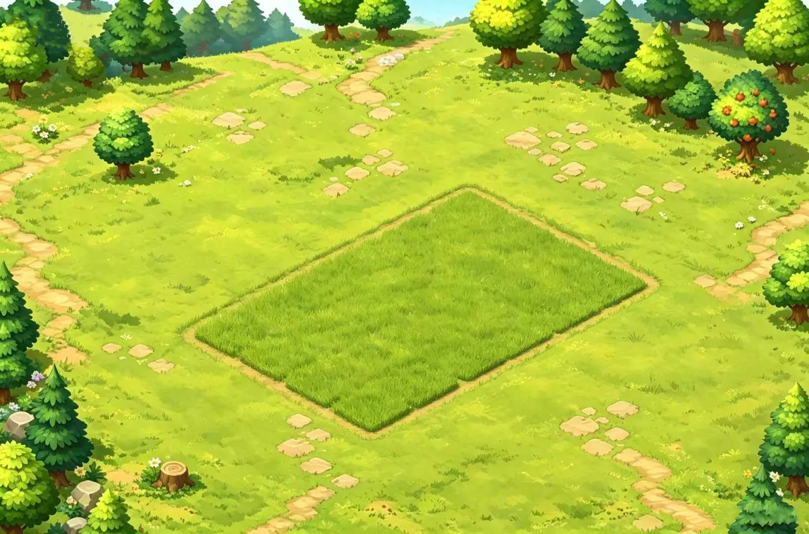

二十四格等距田：播种、浇水、赶虫、收割。人走开，庄稼还在长。

MY PET · 本地工具箱
它住在你的桌面上
照顾、种田、说话。图片压缩和 PDF 都在本机完成，不上传。
Mac 未签名。若提示已损坏，把 App 拖进「应用程序」后执行
sudo xattr -cr /Applications/MPT.app
Gameplay
农场、喂食、桌宠。点地块会浇一下水。

二十四格等距田：播种、浇水、赶虫、收割。人走开，庄稼还在长。
饱食、卫生、心情会随时间掉。喂食、清洁、休息；亲密度会慢慢涨。
透明置顶小窗，可拖、会走。连续工作约半小时，它会叫你起来歇一下。
Changelog
正式版更新记在这里。